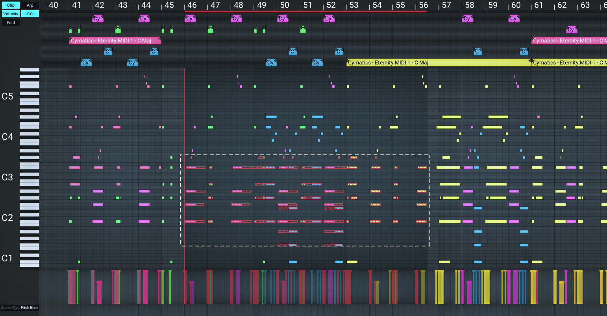
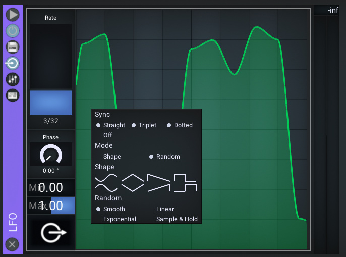
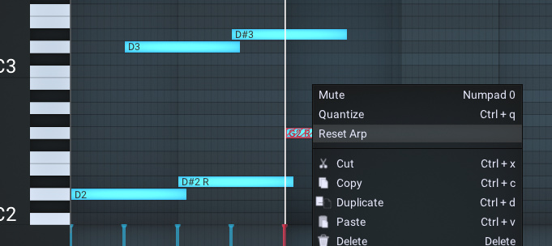
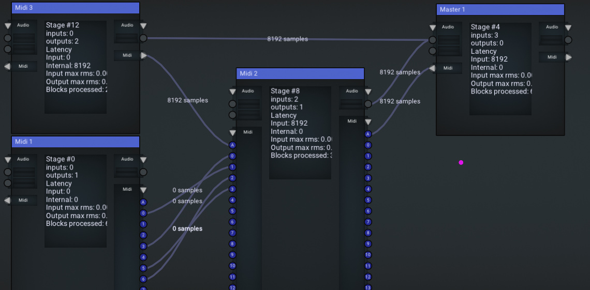
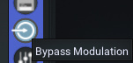
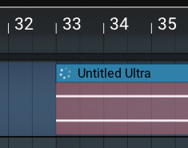
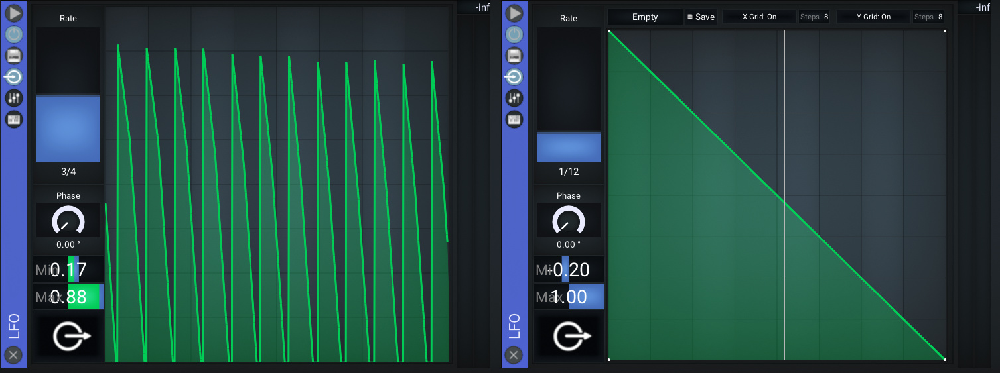
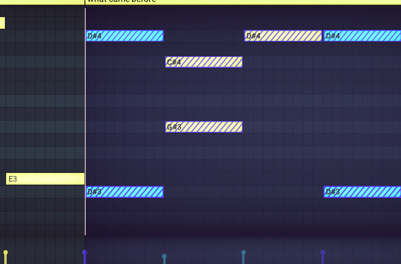

- Bass Studio is a DAW which supports VST2, VST3 and CLAP plugins.
- Releases are provided for Windows and Linux for the x86_64 architecture.
- Closed Source. Beta versions are free to download and use.
- Supports CLAP, VST3 and VST2 plugins
- Sample accurate latency compensation
- Multithreaded audio processing
- Fast startup and load times
- Internal sample rate is indepentend from Audio Drivers sample rates
- Sample accurate modulation for plugin parameters
- Sample accurate automation for plugin parameters
- Python scripting support for Midi editing
- Pattern based Midi groove and swing
- Supported sample file formats: WAV, Flac, MP3
- Audio Sample stretching and pitch shifting
- Node based view on project hierarchy, freely routable
- Custom themes including background images
- Multi Monitor support (Second window with note editor i.e.)
- Midi Arpeggiator
- Builtin plugins:
- Synth (Supports math formulas for modulations)
- EQ
- Gain
- Stereo Width
- Visualizer (With Python support)
- LFO (Sample accurate modulation for plugin parameters)
- Group
- Sample Delay
- Sample Crush
Bass Studio v0.6.3.0
- Windows: bass-v0.6.3.0-windows-x86_64-setup.exe
- Linux: bass-v0.6.3.0-linux-x86_64.tar.gz
- Linux with Python support: bass-v0.6.3.0-linux-python-3.11-x86_64.tar.gz
Previous Releases: https://github.com/nidefawl/bassstudio/releases
Join the Discord Server
https://discord.gg/aGdB8b7evpMay 16, 2024
Changes
- Fix incorrect audio output latency compensation
- Fix feedback routing loop detection
- Audio clips: Fix mute/unmute not working
- EQ: Fix incorrect latency compensation
- Synth: Fix midi input delay when oversampling is enabled
- Arp: Fix random time parameter automation
- Freezing Tracks: Tracks now appear in the correct position
- commandline plugin scanner: Fix --help usage output
- Update shader view: Now loads shadertoy shaders. iTime is synchronized to quarter beats.
- Don't run autosave during audio rendering
- Linux: Add installer for linux build without python dependency
- Rendering: Don't render text with fontsize < 2 and improve font atlas usage
- Disable audio block allocation tracking
- Add outline stroke to hovered clips
May 1, 2024
New Features
- 64 Bit Summing: Summing for tracks and plugins is now done using 64 bit floating points.
-
Improved MIDI Multi-Clip Editing

MIDI editing across multiple clips.
- Random LFO: Smooth, Linear, Exponential and Sample & Hold Modes.

- ARP Reset for Notes

- Free MIDI routing: MIDI between tracks can be freely routed in the node graph.

- Per-Plugin Modulation Bypass

- Improved asynchronous audio file loading

- Improved accuracy of cross-modulating LFOs

- Improved shading and selection visibility in note editor

Other changes
- Reduce size of MIDI data in project files
- Fixed modulation settings when routing to bipolar parameters (i.e. pan)
- Fixed modulation routing in groups not getting loaded correctly
- Fixed Midi routing for external hardware devices
- Fixed clip fades sometimes not showing on audio clips
- Fixed a bug with the random number generators entropy
- Fixed "Apply Arp" processing muted notes
- Fixed audio clip length updates when changing BPM
- Fixed some controls not reacting to all keyboard inputs
- Fixed cut/copy/paste commands sometimes getting processed in the wrong editor
- Fixed possible crashes
Apr 11, 2024
Changes
- Added VST3 support (sample accurate automation)
- Added Audio sample pitch shifting and time stretching
- Added Midi Grooves
- Added Freeze Track option
- Added Progressbar to export process
- Added .mp3 and .flac file loading support
- Added Apply Arp command
- Implemented recording of MIDI control data and pitchwheel changes
- EQ now has oversampling and sample accurate automation and better UI
- Synth now has oversampling
- Fixed note quantization command
- Fixed mouse scrolling on knobs
- Fixed mouse scrolling on lists
- Fixed a 1-sample bug in LFO modulation processing
- Midi files now load with correct velocities, control data and track names